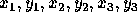

| The Circumference of the Circle |
To calculate the circumference of a circle seems to be an easy task - provided you know its diameter. But what if you don't?
You are given the cartesian coordinates of three non-collinear points in the plane.
Your job is to calculate the circumference of the unique circle that intersects all three points.
The input file will contain one or more test cases. Each test case consists of one line containing six real numbers  , representing the coordinates of the three points. The diameter of the circle determined by the three points will never exceed a million. Input is terminated by end of file.
For each test case, print one line containing one real number telling the circumference of the circle determined by the three points. The circumference is to be printed accurately rounded to two decimals. The value of is approximately 3.141592653589793.
0.0 -0.5 0.5 0.0 0.0 0.5 0.0 0.0 0.0 1.0 1.0 1.0 5.0 5.0 5.0 7.0 4.0 6.0 0.0 0.0 -1.0 7.0 7.0 7.0 50.0 50.0 50.0 70.0 40.0 60.0 0.0 0.0 10.0 0.0 20.0 1.0 0.0 -500000.0 500000.0 0.0 0.0 500000.0
3.14 4.44 6.28 31.42 62.83 632.24 3141592.65